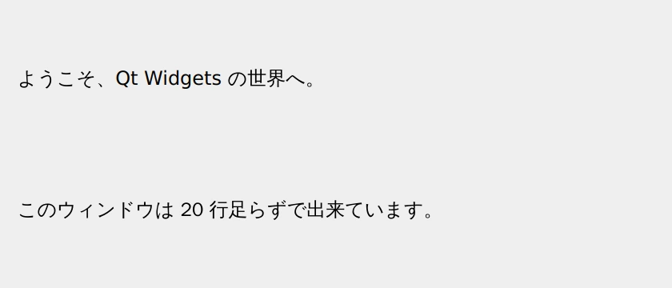
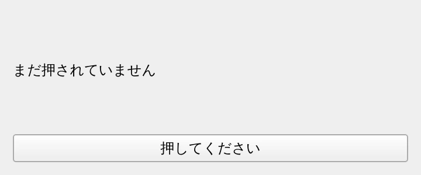

第 14 章·読了目安 14 分
付録 C++ でやるなら — 何がそのままで、何が違うか
「Python で書いたところを、そのまま C++ で書けばいいの？」への答え。結論から言えば大部分はそのままですが、質的に違うものが 5 つあります。
結論: だいたいそのまま。ただし 5 つだけ質が違う
先に答えを書きます。Qt の使い方そのものは、Python でも C++ でもまったく同じです。 クラス名も、メソッド名も、シグナル名も、引数の順番も変わりません。 この教材で学んだ知識は、9 割方そのまま持っていけます。
Qt はもともと C++ のライブラリで、PySide6 はそれを Python から呼べるようにしただけのものです。 つまりあなたが学んできたのは、最初から C++ の Qt だったとも言えます。
ただし、「そのまま書き写せばいい」とまでは言えません。 言語が変わることで質的に違ってくるものが 5 つあります。 それを順に見ていきます。
まず、並べて見てみる
第 2 章で作った最初のウィンドウを、Python と C++ で並べます。
"""ウィンドウらしいウィンドウを作る — タイトル・サイズ・中身を持たせる。実行: python ch02_window.py"""import sysfrom PySide6.QtWidgets import QApplication, QLabel, QVBoxLayout, QWidgetapp = QApplication(sys.argv)# 「入れ物」となるウィジェット。これがウィンドウ本体になる。window = QWidget()window.setWindowTitle("はじめての Qt ウィンドウ")window.resize(420, 180)# 中身を縦に並べるためのレイアウト。# QVBoxLayout(window) のように親を渡すと、その場で window に適用される。layout = QVBoxLayout(window)layout.addWidget(QLabel("ようこそ、Qt Widgets の世界へ。"))layout.addWidget(QLabel("このウィンドウは 20 行足らずで出来ています。"))window.show()sys.exit(app.exec())// ch02_window.py と同じ画面を C++ で書いたもの。//// Python 版と見比べてください。呼んでいるクラスもメソッドも、まったく同じです。// 違うのは「言語としての書き方」だけです。#include <QApplication>#include <QLabel>#include <QVBoxLayout>#include <QWidget>int main(int argc, char *argv[]){ QApplication app(argc, argv); // Python: window = QWidget() // C++ では、この場所（スタック）に置くだけで作られる。new は要らない。 QWidget window; window.setWindowTitle("はじめての Qt ウィンドウ"); window.resize(420, 180); // Python: layout = QVBoxLayout(window) // ここは new で作る。理由は、レイアウトの寿命を window に任せるため。 QVBoxLayout *layout = new QVBoxLayout(&window); layout->addWidget(new QLabel("ようこそ、Qt Widgets の世界へ。")); layout->addWidget(new QLabel("このウィンドウは 20 行足らずで出来ています。")); window.show(); // Python: sys.exit(app.exec()) return app.exec();}行の並びも、呼んでいるものも、ほぼ 1 対 1 で対応しているのが分かるはずです。 そして実際に、出来上がる画面も同じです。


どちらも実際に動かして撮ったものです。 Python 版はページ上部のバッジのバージョン、 C++ 版は環境の都合で Qt 6.4 でビルドしています。 バージョンが違っても同じ結果になること自体が、 ここで言いたいことの証明にもなっています。 この範囲の API は Qt6 を通してずっと変わっていません。
違い ① ビルドの壁 — ここがいちばん大きい
実のところ、コードの書き方よりもこちらのほうが障壁になります。
| Python (PySide6) | C++ | |
|---|---|---|
| 準備 | pip install pyside6 の 1 行 |
Qt 本体のインストール＋コンパイラ＋CMake |
| 実行するまで | python app.py |
configure → build → 実行 |
| 1 文字直したあと | そのまま実行し直すだけ | ビルドし直す（数秒〜数分） |
| 実行速度 | 起動がやや遅い | 速い |
| 配布 | PyInstaller で数十〜百 MB | 実行ファイル＋Qt のライブラリ |
Qt 本体は Qt Online Installer から入れるのが標準です。
アカウント登録が必要で、ダウンロードは数 GB になります。
Linux ならディストリビューションのパッケージ（qt6-base-dev など）でも構いません。
そして、Python には無かったビルド設定ファイルを書くことになります。
# C++ 版サンプルのビルド設定。## cmake -S . -B build# cmake --build build# ./build/ch02_window## Python 版で言えば「pip install pyside6 して python xxx.py する」にあたる部分が、# C++ ではこのファイルになります。cmake_minimum_required(VERSION 3.16)project(qt6_widgets_examples LANGUAGES CXX)set(CMAKE_CXX_STANDARD 17)set(CMAKE_CXX_STANDARD_REQUIRED ON)# Q_OBJECT を書いたクラスを moc に通す作業を自動化する。# これを ON にしておかないと「vtable への未定義参照」でリンクに失敗する。set(CMAKE_AUTOMOC ON)set(CMAKE_AUTOUIC ON) # .ui を ui_*.h に変換する（pyside6-uic に相当）set(CMAKE_AUTORCC ON)find_package(Qt6 REQUIRED COMPONENTS Widgets)foreach(sample ch02_window ch03_signals ch03_custom_signal) add_executable(${sample} ${sample}.cpp) target_link_libraries(${sample} PRIVATE Qt6::Widgets)endforeach()cmake -S . -B buildcmake --build build./build/ch02_windowundefined reference to `vtable for MyWidget'
Q_OBJECT を書いたクラスが moc（後述）に通っていないときのエラーです。
CMakeLists.txt に set(CMAKE_AUTOMOC ON) があるか確認してください。
C++ 側の Qt でいちばん有名なつまずきポイントです。
違い ② メモリ管理 — 第 7 章の話が逆になる
第 7 章で「Python 側で参照を残さないとウィンドウが消える」という話をしました。 C++ ではこの悩みがありません。かわりに「誰がいつ消すのか」を自分で決める必要があります。
2 つの作り方
QWidget window; // ① スタックに置く // main を抜けるときに自動で消えるQLabel *label = new QLabel("文字", &window); // ② new で作り、親を渡す // 親（window）が消えるとき一緒に消える
Qt Widgets では、トップレベルのウィンドウは ①、その中身は ②というのが定石です。
② で親を渡しておけば delete は不要です。親が責任を持って片付けてくれます。
第 7 章で説明した「親が子を破棄する」というオブジェクトツリーは、 もともと C++ のこの仕組みそのものです。 PySide6 はそこに Python のガベージコレクションが重なっているため、話が少しややこしくなっていました。 C++ のほうが、むしろ素直です。
上のサンプルで QVBoxLayout だけ new しているのを不思議に思ったかもしれません。
レイアウトは、貼り付けた先のウィジェットに所有権が移ります。
スタックに置くと、ウィジェットが片付けようとした先がすでに無くなっていて壊れます。
レイアウトとウィジェットの子は new、と覚えてください。
違い ③ Q_OBJECT と moc — 自作シグナルのときだけ
Python では、シグナルを 1 行書くだけで作れました。
class NameForm(QWidget): submitted = Signal(str)C++ では、クラスに 2 つの決まりごとが増えます。
- クラスの先頭に
Q_OBJECTマクロを書く - そのクラスを moc（メタオブジェクトコンパイラ）に通す
// ch03_custom_signal.py と同じことを C++ で書いたもの。//// 自分でシグナルを作るときだけ、C++ には Python にない手続きが要ります。// ・クラスに Q_OBJECT マクロを書く// ・そのクラスを moc（メタオブジェクトコンパイラ）に通す//// moc の実行は CMake の CMAKE_AUTOMOC が自動でやってくれるので、// 実際に自分で意識するのは Q_OBJECT を書き忘れないことだけです。#include <QApplication>#include <QLabel>#include <QLineEdit>#include <QPushButton>#include <QVBoxLayout>#include <QWidget>class NameForm : public QWidget{ Q_OBJECT // ★ これを書き忘れると、シグナルもスロットも動かないpublic: NameForm() { setWindowTitle("自作シグナル（C++）"); resize(380, 170); m_edit = new QLineEdit; m_edit->setPlaceholderText("名前を入れて［あいさつ］を押す"); QPushButton *button = new QPushButton("あいさつ"); m_result = new QLabel("―"); QVBoxLayout *layout = new QVBoxLayout(this); layout->addWidget(m_edit); layout->addWidget(button); layout->addWidget(m_result); connect(button, &QPushButton::clicked, this, &NameForm::emitSubmitted); connect(this, &NameForm::submitted, this, &NameForm::greet); }signals: // Python: submitted = Signal(str) void submitted(const QString &name);private slots: void emitSubmitted() { emit submitted(m_edit->text()); } // Python: @Slot(str) def greet(self, name) void greet(const QString &name) { m_result->setText(QString("こんにちは、%1 さん！") .arg(name.isEmpty() ? QString("ななし") : name)); }private: QLineEdit *m_edit; QLabel *m_result;};int main(int argc, char *argv[]){ QApplication app(argc, argv); NameForm form; form.show(); return app.exec();}// 1 ファイルにクラスを書いた場合は、moc の生成結果をここで取り込む。// ヘッダとソースを分けるふつうの書き方なら、この行は要りません。#include "ch03_custom_signal.moc"moc は「Q_OBJECT が書かれたクラスを読んで、シグナル／スロットの配線に必要なコードを 自動生成する」道具です。Python では実行時にできることを、C++ ではコンパイル前に用意しておく、 というだけの違いです。
そして moc の実行は CMake が自動でやってくれます（CMAKE_AUTOMOC ON）。
自分で意識するのは Q_OBJECT を書き忘れないことだけです。
既存のシグナルにつなぐだけなら、Q_OBJECT もクラスも要りません。
ラムダを使えば済みます。次の例がそれです。
違い ④ connect の書き方
// ch03_signals.py と同じ「押した回数を数える」を C++ で書いたもの。//// 注目してほしいのは connect の書き方です。// Python: button.clicked.connect(on_clicked)// C++: QObject::connect(button, &QPushButton::clicked, ラムダ);//// つなぐ相手をラムダにすれば、クラスを作らずに済みます。// （自分でシグナルを作りたくなったら Q_OBJECT が必要になります。次の例を参照）#include <QApplication>#include <QLabel>#include <QPushButton>#include <QVBoxLayout>#include <QWidget>int main(int argc, char *argv[]){ QApplication app(argc, argv); QWidget window; window.setWindowTitle("シグナルとスロット（C++）"); window.resize(360, 150); QLabel *label = new QLabel("まだ押されていません"); QPushButton *button = new QPushButton("押してください"); QVBoxLayout *layout = new QVBoxLayout(&window); layout->addWidget(label); layout->addWidget(button); int count = 0; // 第3引数の &window は「受け手」。これを渡しておくと、 // window が消えたときに接続も自動で切れる（Python では気にしなくてよい部分）。 QObject::connect(button, &QPushButton::clicked, &window, [&count, label]() { count += 1; label->setText(QString("%1 回押されました").arg(count)); }); window.show(); return app.exec();}
| 書き方 | |
|---|---|
| Python | button.clicked.connect(on_clicked) |
| C++ | connect(button, &QPushButton::clicked, this, &MyClass::onClicked); |
長く見えますが、「誰の・どのシグナルを・誰の・どのスロットに」を
そのまま並べているだけです。Python 版は前半 2 つが button.clicked に
まとまっている、という違いにすぎません。
connect(button, SIGNAL(clicked()), this, SLOT(onClicked()));connect(button, &QPushButton::clicked, this, &MyClass::onClicked);
SIGNAL() / SLOT() は名前を文字列として扱う古い書き方です。
綴りを間違えてもコンパイルは通ってしまい、実行時に
「そんなスロットはない」と警告が出るだけで、静かに動かなくなります。
C++ の Qt の記事は Python 以上に古いものが多いので、
SIGNAL( という文字を見かけたら Qt4 時代の記事だと判断してください。
Python の exec_() と同じ役割の目印になります。
違い ⑤ 型 — 静的型と QVariant
いちばん地味ですが、書く量にいちばん効いてくる違いです。
| 用途 | Python | C++ |
|---|---|---|
| 文字列 | str | QString |
| 文字列の組み立て | f"{n} 回" | QString("%1 回").arg(n) |
| リスト | list | QList<T> / std::vector<T> |
| 辞書 | dict | QHash<K, V> / QMap<K, V> |
| 「何でも入る値」 | そのまま返せる | QVariant で包む |
Python では data() から文字列でも色でもそのまま返せました。
C++ の data() は戻り値の型が QVariant と決まっているので、包む必要があります。
「関係ない role には何も返さない」は、C++ では空の QVariant を返すことになります。
def data(self, index, role): if role == Qt.ItemDataRole.DisplayRole: return self._rows[index.row()] return NoneQVariant data(const QModelIndex &index, int role) const override{ if (role == Qt::DisplayRole) return m_rows.at(index.row()); return QVariant();}書き換え早見表
| Python (PySide6) | C++ |
|---|---|
app = QApplication(sys.argv) | QApplication app(argc, argv); |
sys.exit(app.exec()) | return app.exec(); |
w = QWidget() | QWidget w;（または new QWidget(親)） |
w.setWindowTitle("題") | w.setWindowTitle("題"); |
layout.addWidget(b) | layout->addWidget(b);（ポインタは ->） |
Qt.AlignmentFlag.AlignCenter | Qt::AlignCenter |
QMessageBox.StandardButton.Yes | QMessageBox::Yes |
sig.connect(slot) | connect(送り手, &型::sig, 受け手, &型::slot); |
x = Signal(str) | signals: void x(const QString &); ＋ Q_OBJECT |
self.x.emit(v) | emit x(v); |
@Slot() | private slots:（または普通のメソッド） |
super().__init__() | : QWidget(parent)（初期化リスト） |
pyside6-uic form.ui -o ui_form.py | set(CMAKE_AUTOUIC ON) が自動でやる |
from PySide6.QtGui import QAction | #include <QAction> |
. から :: に変わるだけ
Qt.AlignmentFlag.AlignCenter が Qt::AlignCenter になるように、
C++ では区切りが :: です。
そして C++ の Qt では、列挙型を Qt::AlignmentFlag::AlignCenter と
最後まで書く必要はありません（Qt::AlignCenter で通ります）。
この点は Python 版より短く書けます。
この教材の各章は、C++ ではどう変わるか
| 章 | C++ での違い |
|---|---|
| 第2章 最初のウィンドウ | ほぼ同じ。sys.exit() が return になるだけ |
| 第3章 シグナルとスロット | connect の書き方が変わる。自作シグナルには Q_OBJECT が要る |
| 第4章 レイアウト | まったく同じ。new で作る点だけ違う |
| 第5章 ウィジェット図鑑 | まったく同じ。クラス名もメソッド名も変わらない |
| 第6章 QMainWindow | ほぼ同じ |
| 第7章 親子関係とメモリ | 話が変わる。GC がないぶん、むしろ単純になる |
| 第8章 ダイアログ | ほぼ同じ。戻り値がタプルではなく参照渡しになるものがある |
| 第9章 Qt Designer | 同じツール。変換は CMake が自動でやる |
| 第10章 モデル / ビュー | 戻り値を QVariant で包む。考え方は同じ |
| 第11章 見た目を整える | まったく同じ。スタイルシートの文法も同一 |
| 第13章 配布 | PyInstaller ではなく windeployqt / macdeployqt |
結局、どちらを選ぶべきか
| こういう場合 | おすすめ |
|---|---|
| 自分用の道具をさっと作りたい | Python |
| すでにある Python の処理に画面を付けたい | Python |
| 機械学習やデータ処理と組み合わせる | Python |
| 試行錯誤しながら画面を詰めたい | Python（ビルド待ちがない） |
| 起動速度・動作速度が要件になる | C++ |
| 組み込み機器で動かす | C++ |
| ソースを隠して配布したい | C++ |
| 既存の C++ 資産と組み合わせる | C++ |
| チームがすでに C++ で書いている | C++ |
重い処理だけ C++ で書いて、画面と組み立ては Python から、という構成も取れます。 Qt にはそのための仕組み（Shiboken）がありますが、 最初から狙うものではありません。 まず片方で 1 本作り切ってから考えるので十分です。
移るときの第一歩
C++ に移ると決めたら、順番はこうするのが安全です。
-
Qt をインストールして、空のウィンドウを 1 つ出すところまでやる。
ここが最大の関門なので、先に片付けます。この章の
cpp/ch02_window.cppとCMakeLists.txtをそのまま使えます - この教材の第 4 章（レイアウト）のサンプルを C++ で書き直してみる。 レイアウトはほぼ同じなので、C++ の書き方に慣れる練習になります
-
第 3 章のシグナルとスロットを C++ で書き直す。
ここで
Q_OBJECTと moc に一度ぶつかっておきます - 第 12 章の ToDo アプリを移植する。 ここまで来れば、あとは調べながら進められます
公式ドキュメントは、第 13 章で書いたとおり C++ 版のリファレンスを読むのが正解です。 C++ に移る人にとっては、読み替えの手間すらなくなります。
Qt をインストールしたら、この章の 3 本のサンプルをビルドしてみてください。
cd qt6-widgets/examples/cppcmake -S . -B buildcmake --build build./build/ch02_window
3 本とも動いたら、C++ 側の環境構築は完了しています。
次は ch03_signals.cpp のラムダの中身を書き換えて、
ビルドし直す往復に慣れてください。
この章のまとめ
- Qt の API は Python でも C++ でも同一。学んだことの 9 割はそのまま使える。
- 本当の壁はコードではなくビルド環境。ここを先に片付ける。
- メモリは「トップレベルはスタック、中身は
new＋親」。GC がないぶん単純。 - 自作シグナルのときだけ
Q_OBJECTと moc が要る（CMake が自動化してくれる）。 connectは&クラス::シグナルの形。SIGNAL(を見たら Qt4 時代の記事。- モデル / ビューでは戻り値を
QVariantで包む。